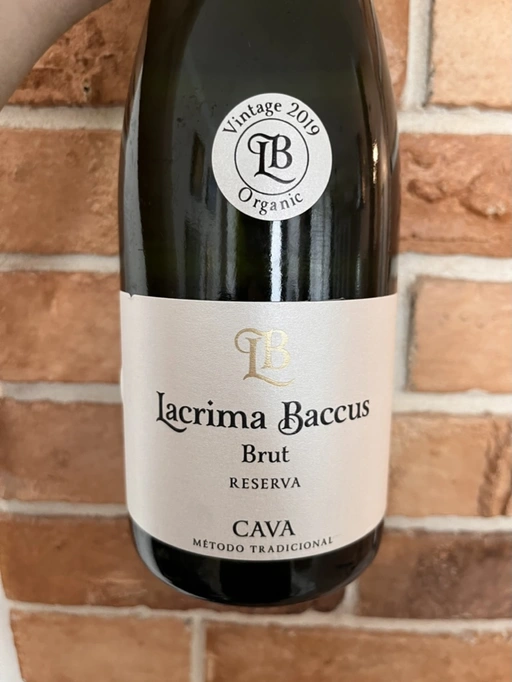

- Type
- White Sparkling, Brut
- Producer
- Lacrima Baccus
- Vintage
- 2019
- Location
- Spain, Cava
- Grapes
- Macabeo, Xarel-lo, Parellada
- Alcohol
- 11.5
- Sugar
- NA
- Price
- 299 UAH
- Cellar
- N/A
Ratings
2022-07-13 - 7.20
Typical Cava for an honest price. Yup, all those familiar notes of apple, plastic and toast. But if you let it warm a little bit, it opens up with something extra - cream soda and baked pear. It is well balanced, as dry as a desert (not to confuse with dessert), with clumsy taste evolution, and a funny aftertaste of burnt toast (unfortunately, we all know how they taste).